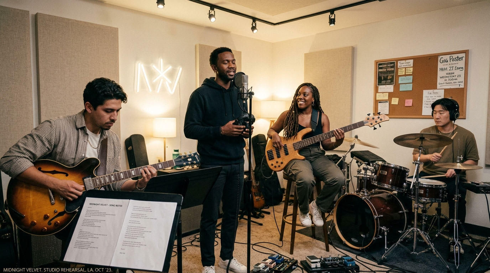

01 — VOICE
Devon "Dev" Mercer AN
主唱 · 來自亞特蘭大，擁有極具穿透力且滑順的假音與渾厚的真音轉換能力。聲音滿載情感細節，負責主導流暢的吟唱與情感起伏。
TAIPEI · EST. 2019
OUR STORY 01 / 04

A NIGHT TO REMEMBER — 2025Midnight Velvet 成立於 2021 年，樂風融合作曲細膩的 Neo-Soul 律動、溫柔綿密的 R&B 和聲，以及微醺的爵士採樣。
我們的音樂就像是清晨兩點灑落窗台的月光，氛圍浪漫、慵懶且帶有淡淡的都市寂寞感。團名象徵著「如深夜般深邃、如絲絨般滑順撫慰人心的聲音質感」。
謝謝你一路聽到這裡。這一次，換我們在現場見你。
聽聽我們的新歌THE BAND 02 / 04
01 — VOICE
主唱 · 來自亞特蘭大，擁有極具穿透力且滑順的假音與渾厚的真音轉換能力。聲音滿載情感細節，負責主導流暢的吟唱與情感起伏。

02 — GUITAR
吉他 · 來自邁阿密，演奏風格以極具質感的切音、柔順的和弦音階與帶有空間感的Reverb音色著稱。

03 — BASS
貝斯 · 來自費城，樂團的律動靈魂。專精五弦貝斯與合成貝斯，擅長鋪陳出極具彈性、圓潤且性感深沉的Low-End低音線條。
04 — DRUMS
鼓手 · 韓裔美國人，來自紐約布魯克林。打鼓著重於「微反拍」的慵懶搖擺感，並巧用打擊樂器與打樣機創造細致的 Hi-Hat 與反拍點綴。
ON THE ROAD 03 / 04
四座城市，四個夜晚。帶上你的心情，我們在燈亮之前見。
AUG 08 · 2026
Legacy Taipei
AUG 15 · 2026
Legacy Taichung
AUG 22 · 2026
LIVE WAREHOUSE
AUG 29 · 2026
漂丿白鷺 Live House
距離巡演首站
正在計算日期…
NEW SINGLE · 2026 04 / 04
寫給那些還醒著、還在等一個答案的夜晚。
透過現場影像，聽見 Midnight Velvet 的新歌。